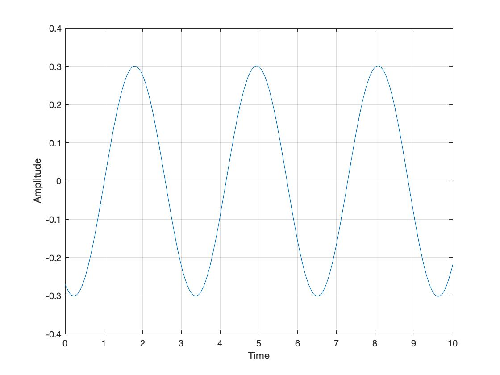
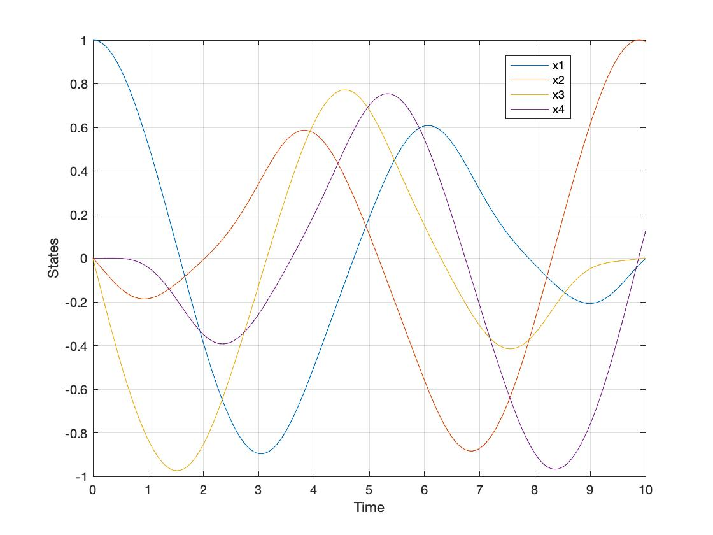
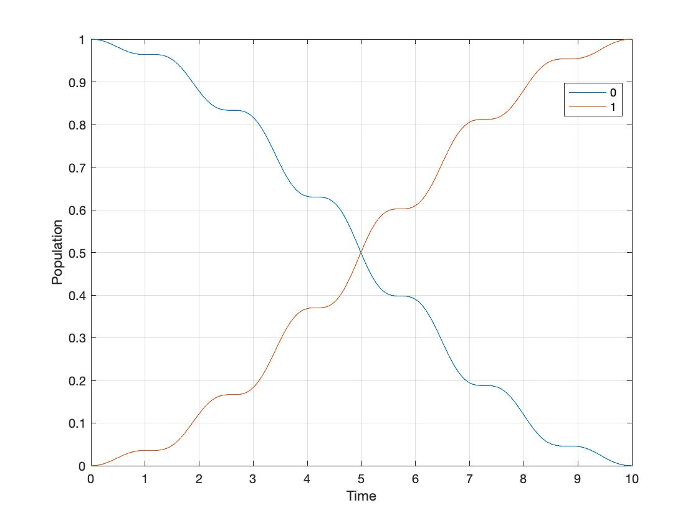

PRONTO.jl
Hello and welcome to the julia implementation of the PRojection-Operator-Based Newton’s Method for Trajectory Optimization (PRONTO).
An Example: Two Spin System
We consider the Schrödinger equation
\[i|\dot{\psi}(t)\rangle = (\mathcal{H_0} + \phi(t)\mathcal{H_1})|\psi(t)\rangle,\]
where $\mathcal{H_0} = \sigma_z = \begin{bmatrix} 0 & 1 \\ 1 & 0 \end{bmatrix}$, and $\mathcal{H_1} = \sigma_y = \begin{bmatrix} 0 & -i \\ i & 0 \end{bmatrix}$ are the Pauli matrices. The real control input $\phi(t)$ drives the system between 2 qubit states $|0\rangle$ and $|1\rangle$, which are the two eigenstates of the free Hamiltonian $\mathcal{H_0}$. We wish to find the optimal control input $\phi^{\star}(t)$ that performs the state-to-state transfer from $|0\rangle$ to $|1\rangle$. To do this, we will solve:
\[\min h(\xi) = p(x(T)) + \int^T_0 l(x(t),u(t),t) dt \\ s.t. \quad \dot{x} = f(x,u,t), x(0) = x_0,\\ \text{where:} \quad \xi(\cdot) = [x(\cdot);u(\cdot)]\]
First, we load some dependencies:
using PRONTO
using StaticArrays, LinearAlgebraNote that $|\psi \rangle$ is a $2 \times 1$ complex vector, and we wish to have the state vector $x$ in the real form. We can define our state vector
\[x = \begin{bmatrix} Re(|\psi\rangle)\\ Im(|\psi\rangle) \end{bmatrix},\]
which in this case is a $4 \times 1$ vector of real numbers. Moreover, any complex square matrix $\mathcal{H}$ can be represented in its real form using the helper function mprod:
\[H_{re} = \begin{bmatrix} Re(\mathcal{H}) & -Im(\mathcal{H}) \\ Im(\mathcal{H}) & Re(\mathcal{H}) \end{bmatrix}.\]
function mprod(H)
Re = I(2)
Im = [0 -1; 1 0]
H_re = kron(Re,real(H)) + kron(Im,imag(H));
return H_re
endWe also define a function inprod to compute the real representation of $|\psi\rangle \langle \psi|$ using $x$:
function inprod(x)
i = Int(length(x)/2)
a = x[1:i]
b = x[i+1:end]
P = [a*a'+b*b' -(a*b'+b*a'); a*b'+b*a' a*a'+b*b']
return P
endModel Definition
We decide to name our model Spin2, where {4,1,3} represents the 4 state vector $x (|\psi\rangle)$, the single input $u (\phi)$ and the 3 parameters kl, kr, kq.
@kwdef struct Spin2 <: PRONTO.Model{4,1,3}
kl::Float64 # stage cost gain
kr::Float64 # regulator r gain
kq::Float64 # regulator q gain
endFor this example, the control objective is to steer the system from the $|0\rangle = [1, 0]^T$ state to the target state $|1\rangle = [0, 1]^T$. We can then define our terminal cost function $m(\psi(T))$ as
\[m(\psi(T)) = \frac{1}{2} \langle \psi(T)|P|\psi(T)\rangle = \frac{1}{2} \langle \psi(T)|(I-|1\rangle \langle 1|)|\psi(T)\rangle\]
function termcost(x,u,t,θ)
P = I(4) - inprod([0 1 0 0])
1/2 * collect(x')*P*x
endWe convert the the Schrödinger equation $i|\dot{\psi}(t)\rangle = (\mathcal{H_0} + \phi(t)\mathcal{H_1})|\psi(t)\rangle$ into the system dynamics
\[\dot{x}(t) = H(u)x = \begin{bmatrix} 0 & 0 & 1 & 0 \\ 0 & 0 & 0 & -1\\ -1 & 0 & 0 & 0\\ 0 & 1 & 0 & 0 \end{bmatrix}x + u\begin{bmatrix} 0 & -1 & 0 & 0 \\ 1 & 0 & 0 & 0\\ 0 & 0 & 0 & -1\\ 0 & 0 & 1 & 0 \end{bmatrix}x.\]
function dynamics(x,u,t,θ)
H0 = [0 1;1 0]
H1 = [0 -im;im 0]
return mprod(-im*(H0 + u[1]*H1) )*x
endFor this example, we only consider the use of energy during the process, and we define our incremental cost
\[\int_0^T l(x,u,t) dt = \int_0^T \frac{kl}{2}u^Tu \quad dt\]
as
stagecost(x,u,t,θ) = 1/2 *θ.kl*collect(u')I*uRegulator
For this example, a Linear-Quadratic Regulator (LQR) is used and designed in this way:
\[R_r(t) = I,\\ Q_r(t) = I - |\psi(t)\rangle \langle \psi(t)|,\\ P_r(T) = Q_r(T) = I - |\psi(T)\rangle \langle \psi(T)|.\]
regR(x,u,t,θ) = θ.kr*I(1)
function regQ(x,u,t,θ)
x_re = x[1:2]
x_im = x[3:4]
ψ = x_re + im*x_im
θ.kq*mprod(I(2) - ψ*ψ')
end
PRONTO.Pf(α,μ,tf,θ::Spin2) = SMatrix{4,4,Float64}(I(4) - α*α')We have finished defining our model! Now it is the time to generate the functions so PRONTO can solve the optimization problem.
PRONTO.generate_model(Spin2, dynamics, stagecost, termcost, regQ, regR)All these functions below are for PRONTO's internal use to solve the problem.
[PRONTO: generating the TwoSpin model
> initializing symbolics...
> tracing functions for TwoSpin...
> generated f!(out, x, u, t, θ::TwoSpin)
> generated Q(x, u, t, θ::TwoSpin)
> generated R(x, u, t, θ::TwoSpin)
> generated f(x, u, t, θ::TwoSpin)
> generated fx(x, u, t, θ::TwoSpin)
> generated fu(x, u, t, θ::TwoSpin)
> generated l(x, u, t, θ::TwoSpin)
> generated lx(x, u, t, θ::TwoSpin)
> generated lu(x, u, t, θ::TwoSpin)
> generated lxx(x, u, t, θ::TwoSpin)
> generated lxu(x, u, t, θ::TwoSpin)
> generated luu(x, u, t, θ::TwoSpin)
> generated Lxx(λ, x, u, t, θ::TwoSpin)
> generated Lxu(λ, x, u, t, θ::TwoSpin)
> generated Luu(λ, x, u, t, θ::TwoSpin)
> generated p(x, u, t, θ::TwoSpin)
> generated px(x, u, t, θ::TwoSpin)
> generated pxx(x, u, t, θ::TwoSpin)
> done!For example, we take a look into fu, which is the first derivative of our dynamics function f
\[\dot{x}=H(u)x = \begin{bmatrix} 0 & 0 & 1 & 0 \\ 0 & 0 & 0 & -1\\ -1 & 0 & 0 & 0\\ 0 & 1 & 0 & 0 \end{bmatrix}x + u\begin{bmatrix} 0 & -1 & 0 & 0 \\ 1 & 0 & 0 & 0\\ 0 & 0 & 0 & -1\\ 0 & 0 & 1 & 0 \end{bmatrix}x\]
with respect to u. Mathematically, fu is
\[\begin{bmatrix} 0 & -1 & 0 & 0 \\ 1 & 0 & 0 & 0\\ 0 & 0 & 0 & -1\\ 0 & 0 & 1 & 0 \end{bmatrix}x = \begin{bmatrix} -x_2\\ x_1\\ -x_4\\ x_3 \end{bmatrix}.\]
In PRONTO, fu looks like this:
function PRONTO.fu(x, u, t, θ::TwoSpin)
out = (MMatrix{4, 1, Float64})(undef)
@inbounds begin
out[1] = (*)(-1, (getindex)(x, 2))
out[2] = (getindex)(x, 1)
out[3] = (*)(-1, (getindex)(x, 4))
out[4] = (getindex)(x, 3)
end
return (SMatrix{4, 1, Float64})(out)
endThey are exactly the same! However, PRONTO.jl has generated an efficient implementation for us automatically.
We now show how to solve the problem. The initial state is the $|0\rangle$ state x_eig(1), and we will solve the system from time t0=0 to tf=10.
x0 = SVector{4}(x_eig(1))
t0,tf = τ = (0,10)Parameters
θ = Spin2(kl=0.01, kr=1, kq=1)To initialize our solver, we set the initial guess input $\mu(t) = 0.5\sin(t)$, and then we obtain the intial trajectory $\varphi$ by solving the open loop problem:
μ = @closure t->SVector{1}(0.5*sin(t))
φ = open_loop(θ,x0,μ,τ)Finally, we are ready to solve the optimization problem!
@time ξ = pronto(θ,x0,φ,τ; tol = 1e-5, maxiters = 50, limitγ = true)Results
If you do this right, you should get:  
The top figure is the optimal control input $u(t)$, while the bottom figure is the state vector $x(t)$ evolves in time. We wish to check if we achieve our control objective, which is to steer the system from $|0\rangle$ to $|1\rangle$, the evolution in time of population is shown below 